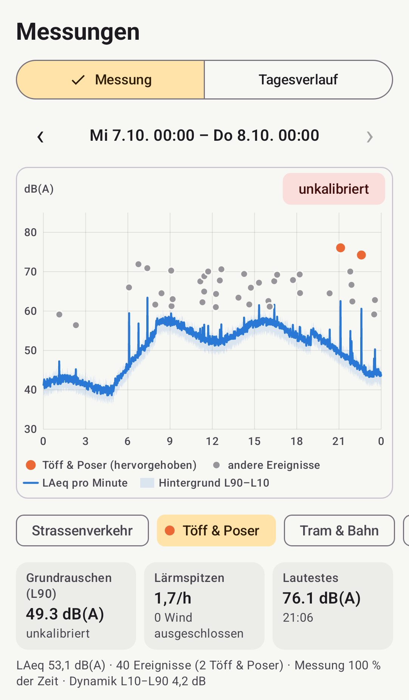

Messen, wo es laut ist
Telefon ans Fenster oder auf den Balkon legen und «Messung starten» – zu jeder Tageszeit, so lange Sie wollen, bis «Stopp». Die App hält jeden lauten Töff und jedes laute Auto mit Uhrzeit, Spitzenpegel und wahrscheinlicher Quelle fest und zeigt jede Messung als Grafik, auch als Tagesverlauf. Alle Werte lassen sich als CSV-Datei exportieren, zum Beispiel für eine Tabellenkalkulation.

Unterwegs melden
Ein lauter Töff fährt vorbei? In der Online-Version tippen Sie auf «Laut! Melden», wählen, was laut war, und senden die Meldung mit Uhrzeit und Standort. Sie erscheint als Punkt auf der Lärmkarte, mit der auf die volle Stunde abgerundeten Zeit und ohne Angabe, wer gemeldet hat.
Herunterladen
Offline-Version herunterladen Online-Version herunterladen
Nur für sich messen: die Offline-Version, ohne Internet und ohne Standort. Auch zur Lärmkarte beitragen und unterwegs melden: die Online-Version. Für Android 8 oder neuer.
Nach dem Download die Datei in der App «Dateien» öffnen (Ordner «Downloads»); der Download-Dialog des Browsers verweigert das Öffnen oft.
Haben Sie noch «Stadtlärm» (0.5.x)? Ab 0.6.0 ist Weniger Lärm eine neue App und installiert sich nicht über die alte. Exportieren Sie in Stadtlärm unter «Daten» Ihre Messwerte als CSV, wenn Sie sie behalten möchten; wer geteilt hat, löscht dort unter «Messwerte teilen» die Daten auf dem Server (sonst löscht der Server sie nach 60 Tagen). Dann Stadtlärm deinstallieren und Weniger Lärm installieren.
- Version
- 0.6.0 (Testversion), Android 8.0 oder neuer
- Offline-Version
- stadtlaerm.apk, SIZE_OFFLINE
- SHA-256
SHA256_OFFLINE- Online-Version
- stadtlaerm-karte.apk, SIZE_KARTE
- SHA-256
SHA256_KARTE
Die Dateien liegen auf dieser Website (GitHub Pages); Downloads werden nicht gezählt. Die Prüfsumme zeigt, ob die Datei unverändert angekommen ist; wie man sie und die Signatur prüft, steht in der Anleitung auf GitHub (Englisch).
Installation Schritt für Schritt
Die App ist noch nicht im Play Store. Sie wird direkt als Datei (APK, die Installationsdatei von Android) installiert:
- Die Offline-Version oder die Online-Version herunterladen.
- Die Datei in der App «Dateien» öffnen (Ordner «Downloads»).
- Falls Android fragt: für diese App «Unbekannte Apps installieren» erlauben, dann zurück und installieren.
- Falls Google Play Protect warnt: «Weitere Details» antippen, dann «Trotzdem installieren».
- Weniger Lärm öffnen und Mikrofon und Benachrichtigungen erlauben. Die Benachrichtigung zeigt, dass gerade gemessen wird.
- Für lange Messungen: Ladekabel einstecken und in der App unter «Einstellungen» auf «Akku-Optimierung öffnen» tippen und Weniger Lärm davon ausnehmen. Sonst kann Android die Messung anhalten.
Updates ab 0.6.0 installieren sich über die installierte Version und behalten die Messwerte. Zwischen der Offline-Version und der Online-Version wechseln Sie genauso: die andere über die installierte installieren. Wer zur Offline-Version wechselt und seine Daten auf dem Server sofort gelöscht haben möchte, tut das vorher in der Online-Version unter «Messwerte teilen».
Kalibrieren
Jedes Telefonmikrofon misst etwas anders, oft um mehrere Dezibel. Verlässlich ist der Pegel erst nach einem Vergleich mit einem Schallpegelmesser der Klasse 1 oder 2:
- Telefon und Schallpegelmesser nebeneinander legen, die Mikrofone wenige Zentimeter auseinander.
- Ein gleichmässiges Geräusch von mindestens 60 dB(A) erzeugen, zum Beispiel Rauschen aus einem Lautsprecher. In der App unter «Kalibrieren» die Messung starten und gleichzeitig auf dem Messgerät gleich lang messen.
- Den Wert des Messgeräts (LAeq, den Mittelwert über die Messdauer) eintippen und «Kalibrierung übernehmen».
Messwerte ohne Kalibrierung sind in der App und im Export als «unkalibriert» markiert. Andere Methoden stehen in der ausführlichen Anleitung (Englisch). Wer Zugang zu einem Schallpegelmesser hat, hilft besonders: Kalibrierwerte für ein Telefonmodell nützen allen mit demselben Modell.
Lärmkarte
Die gemeinsame Karte zeigt die Pegel und lauten Ereignisse der letzten 7 oder 30 Tage, zusammengefasst in Feldern von 100 × 100 m, dazu einen Tagesverlauf über 24 Stunden und die Meldungen als Punkte. Mit der Online-Version tragen Sie bei, sobald Sie «Messwerte teilen» einschalten.
Datenschutz
Die App nimmt nie Ton auf: Sie wertet ihn nur im Arbeitsspeicher aus und behält Pegel und Ereignisse auf Ihrem Telefon.
Daten verlassen das Telefon nur, wenn Sie es wollen: wenn Sie sie exportieren und weitergeben, oder mit der Online-Version, wenn Sie «Messwerte teilen» einschalten oder etwas melden – an den Server des Projekts in der Schweiz, jederzeit löschbar. Den Ort einer geteilten Messung verschiebt die App vor dem Senden zufällig, standardmässig um etwa 50 m (in der App einstellbar); der genaue Messort verlässt das Telefon nie. Nur eine Meldung sendet den genauen Standort. Datenschutz im Detail
Verein Weniger Lärm
Hinter der App und der Lärmkarte steht der Verein «Weniger Lärm» mit Sitz in Zürich, gegründet am 10. Oktober 2026. Er setzt sich für weniger vermeidbaren Lärm ein, der wenigen nützt und viele belastet, in der Stadt wie auf dem Land.
Im Vordergrund steht Lärm von Motoren und Maschinen, etwa übermässig laute Fahrzeuge. Musik, Feste und kulturelle Veranstaltungen sind nicht sein Thema. Der Verein ist gemeinnützig und parteipolitisch neutral.
Vorstand: Christian Frank (Präsident) und Cristina Maurer (Finanzen).